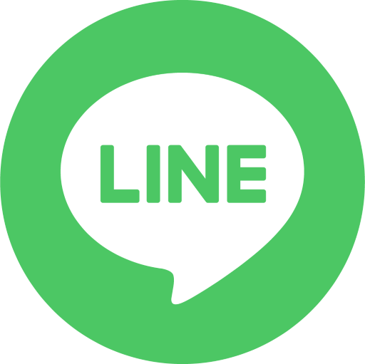
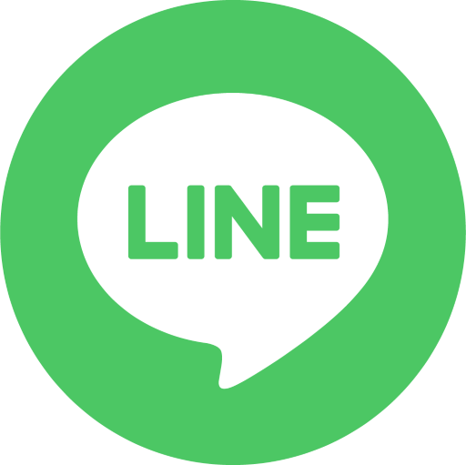
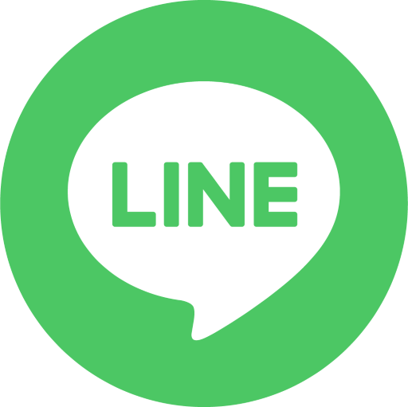
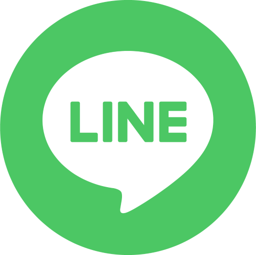

結果を友達にシェアしよう！


 



1. 業界の概要
- 経営コンサル業界では、 企業の課題分析や戦略立案、業績向上などをサポートします。
- 多様な業種の企業と関わり、経営に直結する提案を行うため、様々な事実やデータに対する、 かなり思考力・分析力といった論理的思考力が求められます。
2. 業界の良いところ
- あなたの高IQと戦略性を生かして、やりがいのある複雑な課題に取り組むことができます。
- 関わる会社や業界の数が多く、また会社を動かす経営層に関わるため、社会に対して大きな影響力を発揮できます。あなたの人生のゴールである「世界で1億人を幸せにする」ことへの近道になるでしょう。
3. 私がその業界で活躍するためには？
- IT企業でのCEO経験とデジタルマーケティングの知識を活かすことで、特にデジタルトランスフォーメーション（DX）を支援するコンサルタントとして活躍できるでしょう。
- あるいは、人事統括責任者の経験を利用して、組織開発や人材マネジメントの専門家として貢献することもできます。大手企業をクライアントにしていくと、あなたにとってもやりがいのある仕事になるでしょう。
1. 業界の概要
- 医療や健康関連の技術開発を行う業界。
- アプリ開発やデータ管理など、テクノロジーを駆使して人々の健康をサポート。
2. 業界の良いところ
- 健康に寄与する製品・サービス開発を通じて、直接的に人々の幸せを増進できる。
- テクノロジーと医療の知識が融合した新しい市場であるため、革新的な取り組みが可能。
3. 私がその業界で活躍するためには？
- 過去の睡眠改善アプリ開発の経験を活かし、ヘルスケア領域で新サービスを開発。
- マーケティングスキルを生かして、サービスの普及と市場拡大に注力。
1. 業界の概要
- テクノロジースタートアップ業界は、革新的なアイデアや最新技術を用いた事業化によって市場にニューウェーブを生み出すエネルギッシュな領域です。
- これらの企業群はディスラプティブな技術やモデルを武器に、短期間で大きなユーザーベースを獲得し、持続可能なビジネスモデルを構築することを目指します。
2. 業界の良いところ
- あなたが持っている革新的なアイデアが、新しい事業を生むエンジンとなり、スピーディに市場に投入される経験は、ほかの業界では味わえない醍醐味となります。
- 常に変化し続ける市場の中で自らのビジョンとビジネスセンスを駆使し、新しい価値創造の最前線で活躍できることは、計り知れないキャリアアップのチャンスを意味します。
3. 私がその業界で活躍するためには？
- スタートアップ企業の経営をリードした経験を活かして、グローバルな視点を持ちながら新規事業の舵を取り、革新的ビジネスを市場に打ち出していくリーダーシップを発揮していくと良いでしょう。
- 効果的なリソース配分とチームのモチベーション管理が肝です。Tタイプであるあなたの分析力を活かして、急成長のプレッシャーの中でもビジネス拡大の方針を確固たるものにし、スタートアップの成功実績を次々に作っていくと良いでしょう。
職種：経営コンサルタント
役職：アソシエイト
期待年収：1,200万円
- マッキンゼー・アンド・カンパニーは、世界をリードする経営コンサルティングファームです。ここではあなたの分析力や戦略性を最大限に活かすことができます。
- コンサルタントとして多岐にわたる業界に影響を与える仕事を通じて、「世界で1億人を幸せにする」という夢に近づけるでしょう。
- 経営学の学位とIT企業でのCEO経験がこの転職に有利です。マッキンゼーの求める高い専門性と問題解決能力をアピールすることが鍵となります。
- この企業で活躍するためには、持ち前の学習欲と戦略性を活かして、クライアントのニーズを深く理解し、実行可能な解決策を提供することです。
職種：ビジネスディベロッパー
役職：マネージャー
期待年収：800万円
- 任天堂は画期的なエンターテインメント製品を提供することで有名な企業です。革新的なアプローチでユーザーの幸福を追求する環境があります。
- 個性的なアイデアと戦略性の高さで新規プロジェクトや事業開発に大きく貢献できるでしょう。
- 東京大学卒業の経済学経営学科の背景と、アプリ開発の経験が求められるポジションです。業界知識とITスキルを活かした事業展開が期待されます。
- 活躍するためには、独創性と市場分析能力を生かし、ユーザー志向の新しいビジネスモデルの創出が重要です。
職種：プロダクトマネージャー
役職：シニアマネージャー
期待年収：900万円
- メドピアは医療情報プラットフォームを運営しており、テクノロジーを駆使して医療業界に変革をもたらしている企業です。
- ここでは、以前の睡眠改善アプリの経験を活かし、医療とテクノロジーの融合から新たな価値を生み出すことができます。
- あなたのデジタルマーケティングとアプリ開発の経験が転職に有利です。これらをアピールし、医療分野への理解を深めることが求められます。
- よいパフォーマンスを発揮するためには、医療従事者や患者のニーズに基づくプロダクト開発に注力し、使いやすさと実用性を重視したサービスの提供が重要となります。